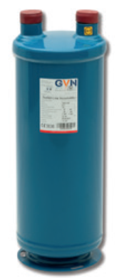

☎ 0216 344 48 19
Rittal SK 3328 Yan montaj pano kliması serisi ürünleri, yedek parçaları ve muadilleri. Yeni, 2.el, tamir ve yedek parça için teklif alın — 23 ürün.



Rittal SK 3305 Rittal SK 3304 Rittal SK 3302 Rittal SK 3329 Rittal SK 3303
Rittal SK 3328 fiyatı model, kapasite ve stok durumuna göre değişir. Fiyat için ürünü teklif sepetine ekleyip WhatsApp veya e-posta ile hızlıca kurumsal teklif alabilirsiniz.
Evet. SK 3328 serisi için kompresör, fan motoru, filtre kurutucu, display/kart ve diğer yedek parçaları orijinal veya muadil olarak tedarik ediyoruz.
Uygun muadil / eşdeğer üniteler ve parçalar için model kodunu bize iletin; güncel Rittal ve MKS Clima muadilleri önerilir.
Evet, SK 3328 arızalı ünitelerine bakım, kompresör değişimi ve gaz şarjı dahil servis veriyoruz.